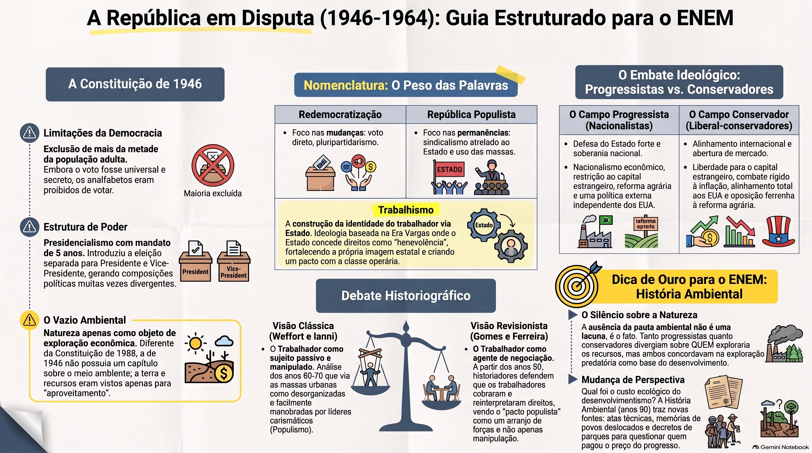
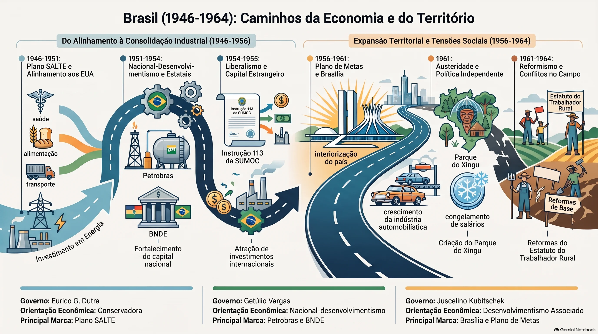
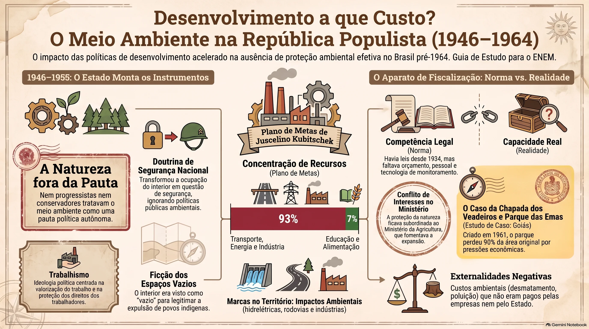
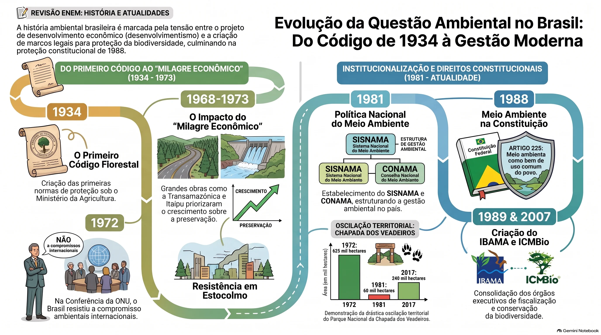

GO-EMCHS305A: identificar as instituições e organismos de controle e fiscalização ambiental, analisando textos geográficos, históricos, dados estatísticos, mapas, filmes, documentários e outras fontes para avaliar o papel desses organismos na questão ambiental. Recorte deste tema: analisar os governos posteriores à Era Vargas — os chamados governos populistas — e as políticas ambientais, a partir dos impactos da política de desenvolvimento.
Ao final deste material, você deverá ser capaz de:
- Compreender a República Populista (1946–1964) como período em disputa, reconhecendo que os próprios nomes dados a ele — redemocratização, populismo, trabalhismo — já são interpretações.
- Analisar as políticas de desenvolvimento de Dutra a Jango e identificar seus impactos ambientais e sociais sobre o território brasileiro.
- Identificar quais instituições, normas e órgãos de controle e fiscalização ambiental existiam no período, distinguindo competência legal de capacidade real de ação.
- Avaliar o papel desses organismos a partir de um caso goiano concreto: os parques nacionais das Emas e da Chapada dos Veadeiros e suas sucessivas redefinições de limites.
- Distinguir permanência e mudança entre o desenvolvimentismo populista e o desenvolvimentismo autoritário, evitando o anacronismo ao ler leis e decretos como documentos de seu tempo.
1Uma república em disputa: por que a natureza não estava na pauta
O período que vai da Constituição de 1946 ao golpe de 1964 aparece nos livros com dois nomes diferentes, e a escolha entre eles não é inocente. Chamar de redemocratização destaca o que mudou: voltaram as eleições diretas para presidente, o pluripartidarismo, o direito de greve, o fim da censura prévia. Chamar de República Populista destaca o que permaneceu: um sindicalismo atrelado ao Estado, herdeiro da estrutura montada no Estado Novo; a manipulação dos meios de comunicação; e o uso das aspirações populares por meio do trabalhismo.
Antes de estudar qualquer órgão ambiental, é preciso perceber que essa disputa de nomes é o objeto. Nomear um período já é interpretá-lo — e a mesma operação vale para as leis e instituições que veremos adiante.
O que a palavra “populismo” nomeia
Antes de tomar partido na disputa de nomes, convém saber o que o termo descreve. Populismo designa um fenômeno político-social característico das sociedades latino-americanas no momento em que um mundo agrário, rural e considerado arcaico cede lugar a um mundo urbano, industrial e moderno. Nesse deslocamento emergem lideranças carismáticas que, apoiadas no trabalhismo, sensibilizam as massas concentradas nas grandes cidades com um discurso contrário às velhas oligarquias e ao capital internacional. Ao mesmo tempo, parte das reivindicações dessas massas é atendida — sobretudo pela legislação social —, o que estreita o vínculo entre líderes e trabalhadores urbanos. O fenômeno se reforçava nas grandes concentrações populares, como os comícios de 1º de maio em que Vargas discursava em estádios de futebol: o São Januário, no Rio de Janeiro, e o Pacaembu, em São Paulo.
Carismático. Aqui a palavra não tem sentido religioso: designa a atribuição, a determinados indivíduos, de qualidades especiais de liderança junto às camadas populares. O caráter carismático não está na pessoa, mas na relação: é algo que os seguidores reconhecem no líder — e que pode ser construído por propaganda, rádio, comício e imagem pública.
Repare que a definição começa por uma transformação que é territorial antes de ser política. O que os manuais chamam de “transição do rural para o urbano” significa, no chão: milhões de pessoas deixando o campo, cidades crescendo sem saneamento, indústrias se instalando às margens de rios e uma agricultura que precisa produzir mais para abastecer essa população concentrada. O vocabulário político do período registra com precisão o deslocamento das pessoas — massas urbanas, operários, êxodo rural — e nada diz sobre os efeitos físicos desse deslocamento. Essa assimetria de vocabulário é a primeira pista do tema.
A Constituição de 1946 e a exclusão embutida
Foi a quinta Constituição do país e a quarta da República. Os manuais costumam resumi-la por três restabelecimentos: a independência e o equilíbrio entre os três poderes, a autonomia dos estados e municípios e a garantia dos direitos individuais. Restabeleceu também o presidencialismo, com mandato de cinco anos e eleição separada para presidente e vice — detalhe que produziria chapas mistas e crises sucessivas. Garantiu o voto universal e secreto, menos para analfabetos, que eram então mais da metade da população adulta brasileira. A democracia restaurada nascia com uma exclusão estrutural embutida.
Vale reter o detalhe da autonomia dos estados e municípios, que voltará adiante: uma federação com entes autônomos poderia, em tese, criar órgãos estaduais de controle ambiental muito antes de 1981. Não o fez — e não por impedimento constitucional.
| Grupos progressistas defendiam | Grupos conservadores defendiam |
|---|---|
| Nacionalismo econômico e restrição ao capital estrangeiro | Liberdade do capital estrangeiro no Brasil |
| Intervenção do Estado na economia e protecionismo | Não intervenção do Estado na economia |
| Ampliação das leis trabalhistas | Eliminação de direitos trabalhistas conquistados |
| Reforma agrária | Combate à reforma agrária |
| Política externa independente dos EUA | Colaboração externa com os EUA |
Repare no que não aparece em nenhuma das duas colunas: a proteção da natureza. Nem progressistas nem conservadores tratavam o meio ambiente como pauta política autônoma. Para uns e outros, floresta, rio, solo e subsolo eram recursos — matéria-prima de um projeto de nação. A divergência era sobre quem deveria explorá-los, o Estado ou o capital privado; nunca sobre se deveriam ser explorados. Essa ausência é o ponto de partida do tema.
O quadro acima opõe dois campos, mas não explica o que cada um propunha fazer com o Estado. Boris Fausto resume a plataforma dos adversários dos nacionalistas em quatro pontos: menor intervenção estatal na economia; industrialização como prioridade menor; progresso do país apoiado numa abertura controlada ao capital estrangeiro; e combate rígido à inflação, por meio do controle da emissão de moeda e do equilíbrio das contas públicas.
Nenhum dos quatro pontos menciona a natureza — nem para explorá-la, nem para protegê-la. O mesmo vale para a plataforma nacionalista. A disputa central do período era sobre quem financia e quem controla a industrialização, não sobre seus efeitos físicos sobre rios, solos e florestas. Quando um tema não aparece em nenhum dos lados de uma disputa, ele não está sendo debatido e perdido: ele está fora do campo do pensável.
Guarde também um ponto de método: essa plataforma reaparecerá quase intacta depois de 1964, com o alinhamento aos Estados Unidos, a revogação das restrições à remessa de lucros e os acordos com o Fundo Monetário Internacional. Identificar a permanência de uma plataforma através de uma ruptura de regime é um bom exercício historiográfico.
Bibliografia: FAUSTO, Boris. História do Brasil. 2. ed. São Paulo: Edusp/FDE, 1995, p. 40 (trecho reproduzido em Caminhos do Homem — História 3, manual do professor, PNLD 2018).
História Ambiental. Campo consolidado no Brasil a partir dos anos 1990, com autores como José Augusto Pádua e Warren Dean. Ele estuda as interações entre sistemas sociais e sistemas naturais e recusa a separação entre cultura e ambiente. Sua chegada muda a pergunta que se faz ao desenvolvimentismo: durante décadas, a história de Brasília, de Furnas e da Belém–Brasília foi contada pelo lado da engenharia e do crescimento do PIB; a História Ambiental pergunta qual foi o custo ecológico e social dessas obras — e quem o pagou. Mudar a pergunta muda o que conta como fonte: passam a interessar decretos de criação de parques, atas de órgãos técnicos e memórias de povos deslocados.
Trabalhismo. Ação política posta em prática pelo Estado durante a Era Vargas que, apoiada na legislação social — apresentada como concessão do governo aos trabalhadores —, contribuiu ao mesmo tempo para construir uma identidade dos trabalhadores e para fortalecer o próprio Estado. Repare na dupla direção: o direito é real, e a forma como ele é concedido também constrói quem o concede. É disso que trata a disputa entre populismo e trabalhismo na análise abaixo.
O rótulo “República Populista” foi consagrado nos anos 1960 e 1970 por intérpretes como Francisco Weffort e Octavio Ianni. Segundo essa leitura, as massas que chegavam às cidades pelo êxodo rural estariam desorganizadas politicamente e, por isso, seriam facilmente manipuladas por líderes carismáticos que ofereciam benefícios em troca de apoio. O trabalhador aparece nesse quadro como sujeito passivo.
Desde os anos 1990 a interpretação vem sendo revista. Angela de Castro Gomes e Jorge Ferreira mostraram que os trabalhadores brasileiros negociaram, cobraram e reinterpretaram os direitos que recebiam; que houve greves, sindicatos combativos e uma cultura política trabalhista com valores próprios. Para esses autores, falar em “populismo” reduz a política a manipulação e apaga a ação dos trabalhadores; eles preferem falar em trabalhismo e em pacto populista como arranjo de forças, não como engodo.
Nada disso invalida os livros didáticos que trabalham com o conceito de período populista — a maioria ainda trabalha. Apenas exige que você saiba de onde o conceito vem e o que ele destaca ou apaga — que é, afinal, o que se pede de um leitor de fontes.
Há uma terceira via entre “manipulação das massas” e “pacto negociado”, e ela ajuda a entender por que o Estado do período não conseguia enfrentar nenhum interesse econômico forte. Marly Rodrigues descreve o Estado populista como um Estado que, embora contemplasse no plano econômico os interesses da burguesia industrial, apresentava-se politicamente como representante de todas as classes, sem distinção.
O ponto decisivo é o da sustentação: essa posição só se mantinha enquanto houvesse equilíbrio entre forças diversas — os vários segmentos burgueses de um lado, os trabalhadores, sobretudo o operariado, de outro. Para sustentar esse equilíbrio, os governos recorriam a categorias amplas e homogeneizantes, como “povo” e “nação”, e pregavam a harmonia entre as classes e a paz social como condição do bem-estar geral.
Por que isso importa neste tema
Um Estado que precisa se apresentar como representante de todos não pode escolher perdedores. E fiscalizar é exatamente isso: escolher um perdedor. Embargar uma obra, negar uma licença ou desapropriar terras para implantar um parque significa contrariar um grupo em nome de outro interesse — algo que a arquitetura política descrita por Rodrigues tornava custosíssimo. A ausência de um órgão ambiental com poder real, no período, não é apenas atraso institucional: é coerente com a lógica de um Estado que se legitimava pela promessa de harmonia.
Compare com o tópico 6: quando o Ministério da Agricultura recomenda reduzir a Chapada dos Veadeiros alegando prejuízo econômico ao município, está operando exatamente essa lógica — só que já sob outro regime.
Bibliografia: RODRIGUES, Marly. A década de 50: populismo e metas desenvolvimentistas no Brasil. São Paulo: Ática, 1992, p. 42 (texto adaptado, reproduzido em Caminhos do Homem — História 3, manual do professor, PNLD 2018).
Ler um mesmo período em três momentos diferentes da historiografia é um bom exercício de método: o passado não mudou, mas as perguntas mudaram — e com elas as fontes consideradas relevantes.
Anos 1960–70: a tese da manipulação
Weffort e Ianni escrevem sob o impacto do golpe de 1964 e procuram explicar por que a democracia caiu tão rápido. A resposta que oferecem é sociológica: as massas urbanas seriam politicamente imaturas, e o populismo funcionaria como substituto da organização de classe.
Anos 1980–90: a virada social
A história social do trabalho, influenciada por E. P. Thompson, vai aos arquivos da Justiça do Trabalho, aos jornais sindicais e aos processos judiciais. Encontra trabalhadores litigando, negociando e recusando. O operário deixa de ser massa e vira sujeito.
Anos 1990 em diante: a virada ambiental
Warren Dean publica A ferro e fogo (1996), história da destruição da Mata Atlântica, e mostra que é possível escrever a história do Brasil tendo a floresta como personagem. Pádua, no mesmo período, recupera críticos brasileiros da devastação já no século XIX. A partir daí, o desenvolvimentismo dos anos 1950 passa a ser lido também como um episódio de transformação ecológica em larga escala.
Evite o anacronismo em duas direções. Cobrar de 1958 um estudo de impacto ambiental — instrumento criado em 1986 — é a primeira. A segunda é supor que “todos pensavam assim”: os irmãos Villas-Bôas, Darcy Ribeiro e a FBCN pensavam diferente, e é justamente por isso que o Parque do Xingu e os parques nacionais existem.
Bibliografia: WEFFORT, Francisco. O populismo na política brasileira. Rio de Janeiro: Paz e Terra, 1978. · GOMES, Angela de Castro. A invenção do trabalhismo. Rio de Janeiro: FGV, 2005. · FERREIRA, Jorge (org.). O populismo e sua história. Rio de Janeiro: Civilização Brasileira, 2001. · DEAN, Warren. A ferro e fogo. São Paulo: Companhia das Letras, 1996. · PÁDUA, José Augusto. Estudos Avançados, v. 24, n. 68, 2010.
A Constituição de 1946 não tem capítulo sobre meio ambiente. O que há são menções esparsas e subordinadas à lógica econômica: a União recebe competência para legislar sobre águas, florestas, caça e pesca, e as riquezas do subsolo são separadas da propriedade do solo. A natureza entra no texto constitucional como objeto de aproveitamento. Só quarenta e dois anos depois, em 1988, ela ganharia artigo próprio — o 225 — e a condição de bem de uso comum do povo.

Uma república em disputa: por que a natureza não estava na pauta
Quadro das duas plataformas em disputa e o comentário de Boris Fausto como leitura de apoio. Uma questão dissertativa com texto de apoio e cinco objetivas com gabarito comentado.
Atv 1 Fazer a atividade do tópico 1 Abre em uma nova página — 6 questões21946–1955: o Estado monta os instrumentos
Os governos deste período têm orientações econômicas distintas, mas compartilham uma premissa: o Brasil precisa industrializar-se depressa, e cabe ao Estado organizar esse esforço. É essa premissa que produz a infraestrutura pesada — barragens, rodovias, usinas — cujos efeitos ambientais duram até hoje. Acompanhe a sequência governo a governo: a ordem cronológica é parte do argumento, porque cada gestão monta uma peça que a seguinte utiliza.
| Governo | Orientação | Marcas no território |
|---|---|---|
| Eurico Gaspar Dutra 1946–1951 | Conservadora; alinhamento aos EUA (TIAR e rompimento com a URSS) | Plano SALTE (saúde, alimentação, transporte e energia), em boa parte não executado; abertura às importações |
| Getúlio Vargas 1951–1954 | Nacional-desenvolvimentismo com capital estatal | Petrobras (1953); BNDE (1952); SPVEA (1953), para a “valorização econômica da Amazônia”; projeto da Eletrobras |
| Café Filho 1954–1955 | Liberal; abertura ao capital externo | Instrução 113 da SUMOC, que liberou a entrada de investimentos estrangeiros |
| Juscelino Kubitschek 1956–1961 | Nacional-desenvolvimentismo associado ao capital estrangeiro | Plano de Metas; Brasília; Furnas e Três Marias; Usiminas; indústria automobilística; rodovia Belém–Brasília |
| Jânio Quadros jan.–ago. 1961 | Austeridade interna e Política Externa Independente | Criação do Parque Indígena do Xingu (abril de 1961); congelamento de salários |
| João Goulart 1961–1964 | Reformista; Plano Trienal e reformas de base | Debate sobre reforma agrária; Estatuto do Trabalhador Rural; conflitos no campo com as Ligas Camponesas |
Panorama do período inteiro. Os tópicos 2, 3 e 4 desenvolvem esses governos em ordem, com o detalhe de cada gestão.
Eurico Gaspar Dutra (1946–1951): a opção conservadora
Eleito com apoio da coligação PSD–PTB, Dutra assumiu as propostas do campo conservador. No plano externo, assinou o tratado de cooperação militar com os Estados Unidos (TIAR) e rompeu relações diplomáticas com a União Soviética, em 1947. No mesmo ano, o Partido Comunista foi declarado ilegal.
No plano econômico, lançou o Plano SALTE — saúde, alimentação, transporte e energia —, em boa parte não executado por falta de recursos, e manteve ampla facilidade de importação. A forte presença do capital norte-americano a partir desse governo consolidou o que a historiografia chama de modelo de desenvolvimento capitalista dependente. Nenhuma dessas decisões passou por qualquer avaliação de impacto sobre o território — nem poderia: não havia instrução legal nem órgão para isso.
Em 1947, sob Dutra, o Brasil rompeu relações diplomáticas com a União Soviética e o Partido Comunista foi declarado ilegal, em nome do “perigo vermelho” e da “infiltração soviética”. Consolidou-se ali a Doutrina de Segurança Nacional: caberia às Forças Armadas manter o país livre da ameaça comunista internamente, enquanto a contenção global ficaria com os Estados Unidos. Guarde essa data: é a mesma doutrina que legitimaria o golpe de 1964 e que, aplicada ao território, transformaria a ocupação do Cerrado e da Amazônia em questão de segurança — e não de política pública discutível.
Getúlio Vargas (1951–1954): o Estado monta os instrumentos
Vargas voltou pelo voto, eleito pela coligação PSD–PTB para o período 1951–1956, com forte apelo junto às massas trabalhadoras urbanas. Seu segundo governo tem três marcas. A primeira é a intervenção do Estado na economia, com a criação do BNDE, em 1952, e da Petrobras, em 1953, estabelecendo o monopólio estatal sobre a produção e o refino do petróleo — o que contrariava diretamente as multinacionais petrolíferas. No mesmo ano nasce a SPVEA, para a “valorização econômica da Amazônia”.
A segunda é o nacionalismo econômico, expresso na Lei de Remessa de Lucros, que limitava a 10% o que empresas estrangeiras podiam enviar ao exterior, obrigando o reinvestimento do restante no país. A terceira é o reforço do trabalhismo, com aproximação entre governo e sindicatos e o reajuste de 100% do salário mínimo em 1954 — proposta do ministro do Trabalho, João Goulart, numa época de inflação anual próxima de 50%. A reação dos setores conservadores ligados às Forças Armadas foi imediata.
A crise se precipitou em agosto de 1954, com o atentado da Rua Toneleros, no Rio de Janeiro: o jornalista e líder da UDN Carlos Lacerda foi ferido e o major Rubens Vaz, da Aeronáutica, morreu. Pessoas da guarda presidencial foram acusadas de envolvimento e a oposição exigiu a renúncia do presidente.
Vale reter um documento desse período. Em 24 de agosto de 1954, pressionado a renunciar após o atentado da Rua Toneleros, Getúlio Vargas suicidou-se e deixou a carta-testamento, na qual responsabilizou pela sua morte os interesses atingidos por sua política econômica — a campanha dos grupos internacionais aliada à dos grupos nacionais contrários às garantias trabalhistas. A carta deixou de ser documento pessoal e virou fonte histórica sobre o conflito que atravessa toda a tabela acima.
Café Filho (1954–1955): a virada liberal
O vice assumiu e aproximou-se da UDN para obter base no Congresso. A medida mais relevante de seu curto governo foi a Instrução 113 da SUMOC, que liberou os investimentos estrangeiros de restrições no Brasil — movimento inverso ao de Vargas e decisivo para o que viria a seguir, porque foi por essa porta que entraram as montadoras e as multinacionais do Plano de Metas.
O período terminou em crise. Após a vitória de Juscelino Kubitschek e João Goulart nas eleições de 1955, setores da UDN e militares antigetulistas tentaram impedir a posse dos eleitos, alegando que o vencedor deveria ter obtido maioria absoluta. O general Henrique Lott, ministro da Guerra, mobilizou tropas em um “golpe preventivo”, em novembro de 1955, garantindo a posse de Juscelino em janeiro do ano seguinte.
Em nove anos, o Estado brasileiro ganhou banco de fomento, empresa estatal de petróleo, superintendência para a Amazônia e regras de entrada do capital estrangeiro. Não ganhou nenhum órgão encarregado de medir o que essas decisões fariam com rios, solos e florestas. A assimetria não é detalhe: ela define o que será possível fiscalizar nas décadas seguintes, e é o objeto do tópico 5.

1946–1955: o Estado monta os instrumentos
De Dutra a Café Filho — SALTE, BNDE, Petrobras, SPVEA e a Instrução 113 da SUMOC. Uma questão dissertativa com texto de apoio e cinco objetivas com gabarito comentado.
Atv 2 Fazer a atividade do tópico 2 Abre em uma nova página — 6 questões31956–1961: Juscelino e o Plano de Metas
Após o suicídio de Vargas, o país viveu dezesseis meses de grande tensão, com três presidentes no cargo. A posse de Juscelino Kubitschek, em 1956, abriu o período mais intenso de transformação do território brasileiro em tempos de democracia. Seu governo se apoiava no desenvolvimentismo: a industrialização como condição indispensável para que o país, ainda muito dependente da agricultura de exportação, alcançasse o nível dos capitalismos avançados — processo liderado pelo Estado, com apoio do capital privado nacional e internacional.
O lema da campanha de Juscelino prometia resolver em um mandato o que outros levariam meio século para fazer. O Plano de Metas concentrava investimentos em cinco setores: energia, transporte, indústria de base, educação e alimentação. Os números revelam a hierarquia real das prioridades: cerca de 93% dos recursos foram para transportes, energia e indústria de base; educação e alimentação ficaram com aproximadamente 7%.
Os resultados materiais foram expressivos. Entre 1955 e 1961 a produção industrial cresceu cerca de 80%; entre 1957 e 1961 o PIB avançou perto de 7% ao ano. Foram erguidas as hidrelétricas de Furnas e Três Marias e a siderúrgica Usiminas, e implantadas as indústrias automobilística e naval. A meta-síntese foi Brasília: a construção de uma nova capital no Planalto Central integrava o Plano de Metas, e a cidade – projetada por Lúcio Costa e Oscar Niemeyer – foi inaugurada em 21 de abril de 1960, deslocando o governo central das pressões populares que eram comuns quando a capital era o Rio de Janeiro.
Nenhuma crítica ao Plano de Metas tem o peso desta, porque não vem de um opositor: vem do autor do Plano Piloto. Vinte e oito anos depois da inauguração, Lúcio Costa registrou seu desencanto com a cidade que projetara. O que o feria, escreveu, era a coexistência lado a lado da arquitetura e da antiarquitetura; as facilidades e o relativo bem-estar de uma parte, contra as dificuldades e o mal-estar crônico da parte maior. E resumiu o Brasil inteiro numa imagem:
Como ler esse depoimento
Ele funciona como fonte, e uma fonte de tipo raro: a autocrítica de quem executou. Repare no que ela concede e no que não concede. Costa não renega o projeto nem o classifica como fracasso — chama Brasília de síntese do Brasil, com seus aspectos positivos e negativos, e de testemunho de uma força viva latente. O que ele reconhece é que a modernidade arquitetônica não produziu, sozinha, a modernidade social que ele e Oscar Niemeyer esperavam que viesse junto.
Esse é exatamente o mecanismo que este material investiga em outro registro. Assim como a cidade moderna não gerou automaticamente uma sociedade mais justa, o crescimento industrial não gerou automaticamente cuidado com o território. Em ambos os casos, faltou a mesma coisa: instituição encarregada, orçamento e poder de contrariar. A euforia desenvolvimentista supunha que o resto viria a reboque — e não veio.
Ao usar este depoimento em uma redação ou resposta dissertativa, identifique sempre quem fala e quando. “O urbanista que projetou Brasília, quase trinta anos depois da inauguração” vale muito mais como argumento do que a frase solta.
Bibliografia: COSTA, Maria Elisa (org.). Com a palavra, Lúcio Costa. Rio de Janeiro: Aeroplano, 2000, p. 108 (trecho reproduzido em Caminhos do Homem — História 3, manual do professor, PNLD 2018).
Os impactos que ninguém contabilizava
Primeiro, o represamento de rios. Uma hidrelétrica não produz apenas energia: alaga vales, altera regimes hidrológicos, bloqueia rotas de peixes migratórios e desloca populações ribeirinhas. Três Marias, no rio São Francisco, e Furnas, no rio Grande, formaram lagos de centenas de quilômetros quadrados. Não havia estudo de impacto, audiência pública nem indenização regulada — esses instrumentos só nasceriam com a Resolução CONAMA 001, de 1986.
Segundo, a expansão rodoviária. A opção pelo caminhão e pelo automóvel, em vez da ferrovia, não foi apenas econômica: cada estrada aberta em área de floresta ou cerrado funciona como eixo de desmatamento, porque atrai ocupação nas margens. A Belém–Brasília, concluída em 1960, abriu ao povoamento uma faixa contínua entre o Centro-Oeste e a Amazônia oriental.
Terceiro, a industrialização concentrada. As fábricas se instalaram sobretudo no ABC paulista, sem qualquer legislação de controle de emissões atmosféricas ou de efluentes. A poluição de Cubatão, que ganharia notoriedade internacional nos anos 1980, é herança direta desse arranjo industrial montado sem regulação.
Externalidade. Custo (ou benefício) de uma atividade econômica que não é pago por quem a realiza e recai sobre terceiros ou sobre o conjunto da sociedade. O desmatamento, a poluição de um rio e o deslocamento de comunidades são externalidades negativas do desenvolvimentismo — e não apareciam na contabilidade do Plano de Metas porque não havia órgão encarregado de medi-las.
Os custos sociais também foram altos e estão bem documentados. Os candangos que construíram Brasília — em sua maioria migrantes do Nordeste e de Minas Gerais — não podiam morar na cidade que erguiam; viviam em acampamentos, cumpriam jornadas exaustivas e sofreram repressão violenta, como no episódio conhecido como Massacre da Guarda Especial de Brasília, em 1959. Depois da inauguração, os vestígios de sua presença foram apagados: a Vila Amaury, por exemplo, foi inundada para a formação do Lago Paranоá.
Duas páginas sobre a sociedade dos anos JK
Boxes de livro didático sobre o clima cultural do período. Toque para abrir e ampliar.
Repare: o otimismo do período também era fabricado no esporte e no ideal de família.
A ideia de “interiorização do desenvolvimento” não nasceu com Juscelino. Vem da Marcha para o Oeste, lançada por Getúlio Vargas nos anos 1930 e 1940, que criou a Fundação Brasil Central (1943) e expedições de reconhecimento rumo ao Brasil central. O argumento era duplo: geopolítico — ocupar para não perder — e econômico — transformar terra “improdutiva” em terra produtiva.
Essa política se apoiava numa ficção cartográfica poderosa: a de que o interior do país era um vazio demográfico. Não era. Cerrado e Amazônia eram habitados havia milênios por povos indígenas e, mais recentemente, por ribeirinhos, quilombolas, seringueiros e comunidades tradicionais. Chamar essas áreas de vazias foi o que autorizou distribuí-las como se não tivessem dono.
Durante a Guerra Fria o argumento ganhou verniz estratégico: territórios desocupados seriam vulneráveis a um suposto “avanço comunista”. É um caso exemplar de como um discurso geopolítico produz efeitos ecológicos concretos. Na chamada Era JK, a população urbana do Centro-Oeste cresceu cerca de 10% entre 1950 e 1960, e o processo de interiorização resultou na expulsão e no extermínio de muitos povos indígenas da região — custo humano que os balanços do Plano de Metas não registravam.
A historiografia da fronteira identifica um padrão que se repete: abertura de via de acesso com dinheiro público; chegada de posseiros pobres e de grileiros; desmatamento para “provar” ocupação e garantir a posse; conflito com populações originárias; e, ao final, concentração fundiária. A legislação de terras da época favorecia esse desfecho, pois exigia “benfeitorias” — e derrubar mata contava como benfeitoria.
Nas décadas de 1950 e 1960, desenvolvimento era entendido como sinônimo de industrialização. Políticos e economistas acreditavam que a urbanização e a ampliação do mercado de bens de consumo gerariam empregos e elevariam a renda média — e que os demais problemas sociais viriam a reboque. A crença foi formulada teoricamente pela CEPAL e pelo ISEB, que davam suporte intelectual ao projeto nacional-desenvolvimentista.
Nesse quadro conceitual, natureza abundante era vantagem comparativa: quanto mais rios para barrar, minério para extrair e terra para abrir, mais rápido o país sairia do subdesenvolvimento. Limite ecológico não era categoria de análise.
Só na década de 1970, com o Clube de Roma e a Conferência de Estocolmo, a ideia de que o crescimento pode ter limites físicos entra no debate público internacional — e, mesmo então, a delegação brasileira em Estocolmo defenderia que a poluição era preço aceitável pelo desenvolvimento.
O preço do crescimento acelerado
A contratação de empréstimos externos elevou a dívida e a inflação; em 1959, o aumento do custo de vida beirou 40%. Juscelino rompeu com o Fundo Monetário Internacional ao recusar as condições impostas. A concentração industrial no Sudeste ampliou a distância de renda em relação ao Nordeste e alimentou migração massiva; a expansão urbana desordenada multiplicou favelas e periferias sem água encanada nem rede de esgoto — problema social e, ao mesmo tempo, ambiental urbano, já que esgoto não tratado vai para os rios.
No campo, a modernização veio acompanhada da expansão dos latifúndios. A partir de 1955 organizaram-se as Ligas Camponesas, lideradas por Francisco Julião, defendendo direitos de posseiros e a sindicalização rural. A reforma agrária entrou na pauta política e seria uma das reformas de base propostas por João Goulart em 1962 — e um dos motivos alegados para sua derrubada.
Bibliografia: FAUSTO, Boris. História do Brasil. São Paulo: Edusp, 1995, p. 427. · BIELSCHOWSKY, Ricardo. Pensamento econômico brasileiro. Rio de Janeiro: Contraponto, 2000. · MARTINS, José de Souza. Fronteira. São Paulo: Hucitec, 1997. · FGV-CPDOC, verbete “Plano de Metas”. · Coleções didáticas consultadas: Interação, Moderna Plus, Por Toda Parte, Ser Protagonista.
A euforia dos anos JK não foi só econômica. Surgiram a Bossa Nova e o Cinema Novo, a seleção brasileira venceu sua primeira Copa do Mundo em 1958, Maria Esther Bueno venceu em Wimbledon e Éder Jofre conquistou o primeiro título mundial de boxe do país. Parecia superado o “complexo de vira-lata”, expressão criada por Nelson Rodrigues após a derrota de 1950. Guarde a associação: otimismo nacional e obra de infraestrutura caminharam juntos na propaganda do período — e criticar a obra passou a soar como criticar o país.
1956–1961: Juscelino e o Plano de Metas
Os números do Plano de Metas, o depoimento de Lúcio Costa e os três impactos não contabilizados. Uma questão dissertativa com texto de apoio e cinco objetivas com gabarito comentado.
Atv 3 Fazer a atividade do tópico 3 Abre em uma nova página — 6 questões41961–1964: Jânio, Jango e a ruptura
Apesar do clima de otimismo, Juscelino não conseguiu eleger seu candidato à sucessão, o marechal Henrique Teixeira Lott. Venceu Jânio Quadros, apoiado por uma coligação em que se destacava a UDN e sustentado por uma campanha de moralização administrativa — a vassoura que varreria a corrupção. Recebeu quase seis milhões de votos, a maior votação dada até então a um candidato. Como presidente e vice eram eleitos separadamente, o vice eleito foi João Goulart, da chapa adversária.
Jânio Quadros (janeiro a agosto de 1961): sete meses
A política econômica foi impopular: corte de gastos públicos, aumento da taxa de juros e contenção salarial, apresentados como necessários para combater a inflação herdada do Plano de Metas. A oposição interna cresceu sobretudo com a Política Externa Independente: restabelecimento de relações com a União Soviética e com a China, condenação da ação dos Estados Unidos em Cuba e a condecoração de Ernesto “Che” Guevara com a Ordem do Cruzeiro do Sul — gesto que rompeu a UDN com o governo.
Em abril de 1961 o presidente Jânio Quadros criou o Parque Indígena do Xingu, atendendo a reivindicação que os irmãos Cláudio, Orlando e Leonardo Villas-Bôas, o antropólogo Darcy Ribeiro e outros faziam desde os anos 1940 para proteger os povos indígenas, a fauna e a flora do Brasil central. É a primeira grande área protegida brasileira criada com justificativa simultaneamente indígena e ambiental — e nasceu de pressão da sociedade civil e de cientistas, não de uma política de Estado.
Em 25 de agosto de 1961, Jânio renunciou, alegando pressão de “forças terríveis”. Calculava que teria apoio popular e que as Forças Armadas não aceitariam a posse de João Goulart, e que voltaria com poderes ampliados. O cálculo falhou: sem apoio no Congresso, o pedido foi prontamente aceito.
Repare na coincidência de datas do ano de 1961. Em 11 de janeiro, Juscelino assina os decretos que criam os parques nacionais das Emas e do Tocantins, em Goiás. Em abril, Jânio cria o Parque Indígena do Xingu. Em agosto, o país entra em crise institucional. As três maiores áreas protegidas criadas no período populista nascem, portanto, em pouco mais de três meses — e por decreto, sem orçamento próprio e sem órgão que as gerisse. O tópico 6 mostra o que aconteceu com elas depois.
A crise da posse e a solução parlamentarista
Amplos setores — empresários, latifundiários, militares e representantes do capital externo — opuseram-se à posse de Goulart, então em viagem à China. Em resposta, formou-se a Rede da Legalidade, movimento liderado pelo governador do Rio Grande do Sul, Leonel Brizola, em defesa da ordem constitucional, com adesão de movimentos sociais, do movimento estudantil e de sindicatos.
A saída negociada foi uma emenda constitucional que instituiu o parlamentarismo: Goulart assumiu a presidência, mas o poder de fato passou ao cargo de primeiro-ministro. Em janeiro de 1963, um plebiscito decidiu macicamente pela volta ao presidencialismo e devolveu-lhe os poderes plenos.
João Goulart (1961–1964): as reformas de base
Em dezembro de 1962, o governo lançou o Plano Trienal, tentativa de conciliar crescimento e controle da inflação. A proposta mais ambíciosa, porém, foram as reformas de base — agrária, urbana, bancária, tributária e universitária —, apoiadas pelas Ligas Camponesas, pelo Comando Geral dos Trabalhadores, por sindicatos e pela UNE.
Boris Fausto faz uma observação que desmonta boa parte da propaganda da época: as reformas de base não se destinavam a implantar uma sociedade socialista. Eram uma tentativa de modernizar o capitalismo e reduzir as profundas desigualdades sociais do país pela ação do Estado. Ainda assim, implicavam mudança grande o bastante para que as classes dominantes em geral — e não apenas os latifundiários, como se costuma supor — oferecessem forte resistência.
A reforma agrária é o ponto em que a questão social e a questão ambiental se encontram, porque ambas dependem de uma mesma decisão: quem controla a terra e sob que regras. Um país que não discute a estrutura fundiária também não consegue regular o uso do solo — e a reserva legal, a área de preservação permanente e o licenciamento rural são, no fundo, tentativas tardias de fazer pela norma ambiental o que não se fez pela reforma agrária.
Bibliografia: FAUSTO, Boris. História do Brasil. 2. ed. São Paulo: Edusp/FDE, 1995, p. 448–449 (trecho reproduzido em Caminhos do Homem — História 3, manual do professor, PNLD 2018).
A crise não teve causa única. O manual do professor da coleção Caminhos do Homem lista os fatores que se somaram a partir de 1963:
- pressões dos sindicatos e do Comando Geral dos Trabalhadores por aumentos salariais;
- tentativa do governo de controlar a remessa de lucros das empresas multinacionais;
- temor de setores da classe média de que o país se transformasse em uma “nova Cuba”;
- pressão dos movimentos sociais rurais, com as Ligas Camponesas exigindo “reforma agrária na lei ou na marra”;
- reação dos grandes proprietários, que se recusavam a cumprir o Estatuto do Trabalhador Rural, aprovado em 1963, que estendia ao campo a legislação trabalhista já garantida na cidade;
- apoio de empresas multinacionais, sobretudo norte-americanas, aos grupos de oposição;
- inconformismo dos militares que, com base na Doutrina de Segurança Nacional, julgavam o presidente incapaz de conter os grupos de esquerda;
- oposição de setores conservadores da Igreja Católica, preocupados com o “perigo vermelho”.
Repare que a Doutrina de Segurança Nacional, formulada em 1947 sob Dutra, reaparece aqui como justificativa — dezessete anos depois, no fim do mesmo período que ajudou a abrir. É um bom exemplo de como um argumento político atravessa décadas mudando de função.
Em 13 de março de 1964, no comício da Central do Brasil, Jango prometeu aprofundar as reformas e anunciou a nacionalização de refinarias particulares. Duas semanas depois, tropas partiram de Minas Gerais em direção ao Rio de Janeiro; em 1º de abril, o presidente deixou Brasília e, em seguida, o país. Encerrava-se a experiência da República Populista.
O golpe não interrompeu o desenvolvimentismo: herdou-o pronto. Estavam de pé as empresas estatais, os bancos de fomento, o modelo rodoviário, a fronteira aberta rumo ao Centro-Oeste e à Amazônia e o argumento de que a obra urgente não pode esperar. O que desapareceu foi a mediação política: imprensa livre, sindicatos atuantes e oposição parlamentar. O tópico 5 mostra o que existia, até ali, em matéria de fiscalização ambiental — e o quanto isso era pouco.
1961–1964: Jânio, Jango e a ruptura
Reformas de base, crise da posse e os fatores do golpe de 1964, com Boris Fausto como apoio. Uma questão dissertativa com texto de apoio e cinco objetivas com gabarito comentado.
Atv 4 Fazer a atividade do tópico 4 Abre em uma nova página — 6 questões5Quem fiscalizava a natureza em 1955? O aparato disperso
Esta é a pergunta central da habilidade aplicada ao período, e a resposta exige cuidado: não é verdade que não existisse nenhuma norma ambiental antes dos anos 1970. Existia legislação — e bastante antiga. O que não existia era um sistema: um órgão com mandato específico, orçamento próprio, poder de polícia e capacidade de dizer “não” a uma obra do governo.
| Instrumento ou órgão | Ano | O que fazia | Limite |
|---|---|---|---|
| Código Florestal (Decreto 23.793) | 1934 | Classificou florestas como bem de interesse comum; criou tipos de floresta protetora e remanescente | Fiscalização praticamente inexistente; foco na garantia do suprimento de madeira e lenha |
| Código de Águas (Decreto 24.643) | 1934 | Regulou o uso das águas e o aproveitamento hidrelétrico | Concebido para viabilizar geração de energia, não para proteger bacias |
| Códigos de Caça e Pesca | 1934 e 1938 | Estabeleceram períodos de defeso e regras de captura | Aplicação local e frágil; sem corpo de fiscais |
| Conselho Florestal Federal | 1934 | Órgão consultivo ligado ao Ministério da Agricultura | Consultivo, sem poder de polícia nem orçamento relevante |
| Parques nacionais (Itatiaia, Iguaçu, Serra dos Órgãos) | 1937–1939 | Primeiras áreas de proteção integral do país | Criados por decreto, sem regularização fundiária nem gestão efetiva |
| Ministério da Agricultura | — | Abrigava toda a matéria florestal e de recursos naturais renováveis | Mesmo ministério que promovia a expansão agrícola: fiscal e fomentador na mesma casa |
| FBCN — Fundação Brasileira para a Conservação da Natureza | 1958 | Entidade civil de cientistas e conservacionistas; pressionava por áreas protegidas | Sociedade civil, sem qualquer poder normativo |
Três conclusões saem desse quadro. Primeira: a proteção da natureza estava alojada no Ministério da Agricultura, isto é, dentro da pasta que existia para expandir a produção agropecuária — quem fiscaliza e quem fomenta eram a mesma casa. Segunda: os instrumentos eram reativos e setoriais (uma norma para florestas, outra para águas, outra para caça), sem qualquer exigência de avaliação prévia de impacto. Terceira: a proteção dependia de decretos presidenciais isolados, o que a tornava tão frágil quanto a vontade política de cada governo — como se verá no tópico seguinte.
Poder de polícia ambiental. Prerrogativa de um órgão público para fiscalizar, embargar obras, aplicar multas e apreender bens em defesa do meio ambiente. No Brasil, esse poder só foi consolidado em sistema com a Lei 6.938/1981, que criou o SISNAMA e o CONAMA, e com a estruturação do IBAMA, em 1989. Antes disso, havia norma sem quem a aplicasse.
Um erro comum ao estudar legislação ambiental é confundir a existência da norma com sua eficácia. O Código Florestal de 1934 é anterior à maior parte das leis ambientais europeias, e ainda assim o Brasil desmatou intensamente durante toda a sua vigência. A explicação está na diferença entre três coisas: a norma (o texto), a instituição (quem aplica) e a capacidade (orçamento, pessoal, tecnologia de monitoramento).
Nos anos 1950 o Brasil tinha a primeira, tinha uma versão precária da segunda e praticamente não tinha a terceira. Não havia sensoriamento remoto — o monitoramento por satélite da Amazônia, feito pelo INPE, só começaria nos anos 1980. Fiscalizar uma área do tamanho do Cerrado a pé e a cavalo, com um punhado de funcionários de um conselho consultivo, era materialmente impossível.
Daí a distinção que atravessa todo este material: competência legal não é o mesmo que capacidade real de ação. Saber o que a lei atribui a um órgão é o começo da análise, nunca o fim.
O golpe de 1964 não interrompeu o desenvolvimentismo — radicalizou-o, retirando dele o componente de negociação política. As grandes obras do “milagre econômico” (1968–1973) — a Transamazônica, Itaipu, a ponte Rio–Niterói, as usinas de Angra — foram executadas sem imprensa livre, sem sindicatos atuantes e sem oposição parlamentar efetiva. O custo ambiental, que já não era contabilizado no período populista, tornou-se indiscutível no sentido literal: não podia ser discutido.
A criação da SEMA em 1973 não decorre de uma conversão ecológica do regime, mas do custo diplomático e financeiro de manter a posição assumida em Estocolmo — inclusive porque bancos internacionais passaram a exigir salvaguardas. É um bom exercício de causalidade histórica.
O jornalista Elio Gaspari formulou a tese que organiza a leitura do período 1968–1973. Segundo ele, foram os anos mais duros da mais duradoura das ditaduras nacionais — a tortura como instrumento extremo de coerção e o extermínio como último recurso da repressão política, libertada das amarras da legalidade pelo AI-5. E foram, ao mesmo tempo, os anos da Copa de 1970, da televisão em cores, do pleno emprego e de taxas inéditas de crescimento.
Gaspari observa que os dois lados coexistiram negando-se, e que décadas depois continuam se negando: quem enxerga um costuma não acreditar — ou não gostar de admitir — que houve o outro.
Onde entra o meio ambiente nessa simultaneidade
A tese vale integralmente para o custo ambiental. As obras que mais transformaram o território brasileiro foram executadas exatamente nos anos em que a imprensa estava censurada, os sindicatos desarticulados e o Congresso esvaziado. O que no período populista era um custo não contabilizado — por ausência de instituição encarregada — torna-se agora um custo impedido de ser discutido. São dois silêncios diferentes, e distingui-los é parte da análise.
O que os números mostram
A promessa oficial era “fazer crescer o bolo para depois reparti-lo”, expressão atribuída a Delfim Netto, ministro da Fazenda do governo Médici. Os dados de concentração de renda do período desmentem a segunda metade da frase:
| Faixa da população | Participação na renda | Depois |
|---|---|---|
| 1% mais rico | 11,7% em 1960 | 17,8% em 1970 |
| 5% mais ricos | 27,69% em 1960 | 39% em 1976 |
| 50% mais pobres | 27,8% em 1960 | 13,1% em 1970 |
Metade da população brasileira perdeu praticamente a metade de sua participação na renda em plena época do “milagre”. Junte esse dado ao custo ambiental das mesmas obras e você tem o balanço completo do período — o crescimento foi real, e foi pago por quem não o recebeu.
Bibliografia: GASPARI, Elio. A ditadura escancarada. São Paulo: Companhia das Letras, 2002, p. 13 e 17. Dados de concentração de renda reproduzidos em Caminhos do Homem — História 3, manual do professor, PNLD 2018.
Estimativas de pesquisadores citadas à época dessa reportagem apontam mais de duas mil vítimas indígenas no período — contagem que não entrou nos primeiros levantamentos oficiais sobre os mortos da ditadura. O dado importa para a habilidade em foco por uma razão direta: obra de infraestrutura, conflito fundiário e violência contra populações originárias são, no Brasil, o mesmo processo visto de três ângulos. Um órgão de fiscalização ambiental que ignore os dois últimos não está fiscalizando o primeiro.
Lida de trás para a frente, essa cronologia responde à pergunta do tema. Os organismos de controle e fiscalização ambiental que hoje existem no Brasil — CONAMA, IBAMA, ICMBio, órgãos estaduais como a SEMAD em Goiás — não são instituições antigas. Eles foram criados depois de o país já ter tomado as decisões estruturais sobre onde colocar suas estradas, suas usinas, suas fábricas e sua fronteira agrícola. A fiscalização ambiental brasileira nasceu com uma tarefa herdada: administrar as consequências de um modelo que ela não pôde discutir enquanto era decidido.
A SPVEA — Superintendência do Plano de Valorização Econômica da Amazônia, criada em 1953 — ilustra o vocabulário da época. O nome do órgão diz tudo: a floresta precisava ser valorizada, isto é, convertida em valor econômico. Em 1966, já sob a ditadura, seria substituída pela SUDAM, com incentivos fiscais que financiaram a abertura de enormes áreas de pastagem. Nenhum dos dois órgãos tinha atribuição de fiscalização ambiental.

Quem fiscalizava a natureza em 1955? O aparato disperso
Códigos de 1934, Conselho Florestal Federal e a diferença entre norma, instituição e capacidade. Uma questão dissertativa com texto de apoio e cinco objetivas com gabarito comentado.
Atv 5 Fazer a atividade do tópico 5 Abre em uma nova página — 6 questões6Goiás, 11 de janeiro de 1961: dois decretos e uma contradição
Nas últimas semanas de seu mandato, Juscelino Kubitschek assinou dois decretos que criaram, no mesmo dia, as duas maiores áreas protegidas do Cerrado goiano: o Decreto 49.874 instituiu o Parque Nacional das Emas, no sudoeste de Goiás, e o Decreto 49.875 criou o Parque Nacional do Tocantins, com 625 mil hectares, que em 1972 passaria a se chamar Parque Nacional da Chapada dos Veadeiros.
Guarde a data: 11 de janeiro de 1961. O mesmo presidente que abriu o Cerrado com Brasília e com a Belém–Brasília assinou, na saída, a proteção de dois de seus fragmentos mais expressivos. Não há contradição pessoal aqui; há a lógica do período inteiro. A criação de parques funcionava como compensação simbólica: preservava-se uma ilha enquanto se convertia o entorno. Proteger por decreto era barato, rápido e não atrapalhava nenhum projeto econômico em andamento.
O que aconteceu depois é a parte mais instrutiva da história. A Chapada dos Veadeiros nasceu com 625 mil hectares. Em 1972, um decreto reduziu o parque para cerca de 172 mil hectares, com base no parecer de uma comissão do Ministério da Agricultura que alegava prejuízo econômico e social ao município de Alto Paraíso — cujas atividades agropecuárias e de mineração estariam sendo restringidas — e observava que o parque fora criado sem a devida aquisição de terras. Em 1981, nova redução, agora para cerca de 60 mil hectares, para abrir caminho à rodovia GO-239.
Em 2001 o parque foi reconhecido como Patrimônio Natural da Humanidade pela UNESCO, junto com o Parque Nacional das Emas. Em 2017, foi ampliado para cerca de 240 mil hectares. Em quarenta anos, portanto, perdeu mais de 90% da área original e depois recuperou parte dela. É a mesma unidade de conservação no papel, mas o território que ela protege mudou de tamanho conforme a correlação de forças de cada momento.
Repare em quem decidia: o Ministério da Agricultura. Uma comissão do órgão responsável pelo fomento agropecuário avaliou um parque nacional e recomendou reduzi-lo em nome da economia local. É exatamente o problema institucional descrito no tópico 5, agora com nome, data e coordenadas — e ele só começaria a ser corrigido em 1973, com a criação da SEMA, e em 1981, com o SISNAMA.
Um decreto de criação de parque não resolve, sozinho, a questão fundiária. Se as terras dentro do perímetro continuam com donos particulares e o Estado não as desapropria nem indeniza, o parque existe no diário oficial e não existe no chão. Foi o que ocorreu na Chapada dos Veadeiros por décadas — e é o argumento que a própria comissão de 1972 usou para justificar a redução. Norma sem orçamento vira letra morta.
Goiás ocupa posição peculiar no desenvolvimentismo brasileiro: é ao mesmo tempo destino e trampolim. Goiânia, planejada nos anos 1930, já era símbolo da Marcha para o Oeste. Brasília, a partir de 1956, transformou o Planalto Central em canteiro de obras continental e puxou estradas em todas as direções. A Belém–Brasília, concluída em 1960, ligou o Centro-Oeste ao Pará atravessando o norte goiano — hoje Tocantins, desmembrado em 1988.
O efeito ambiental foi a conversão acelerada do Cerrado. A partir dos anos 1970, com a correção química dos solos ácidos e a chegada da soja adaptada ao clima tropical, a fronteira agrícola se consolidou. A instituição ambiental brasileira e a maior frente de conversão do Cerrado nascem, portanto, simultaneamente.
A assimetria da proteção legal
O Cerrado é hoje o bioma brasileiro com a maior proporção de área convertida, e a legislação lhe atribui percentual de reserva legal muito inferior ao exigido na Amazônia Legal. Não é erro técnico: é decisão histórica, tomada quando a Amazônia concentrava atenção internacional e o Cerrado era descrito como área de expansão. Nomear um bioma como “fronteira” é já autorizar sua conversão. Soma-se a assimetria reputacional: queimada na Amazônia vira notícia internacional; supressão equivalente no Cerrado, raramente.
Permaneceu: a natureza tratada como recurso estratégico; a integração territorial como imperativo de segurança nacional; a rodovia como instrumento principal de ocupação; a ausência de participação das populações afetadas. Mudou: hoje uma obra dessa escala exige licenciamento em etapas, EIA/RIMA, audiência pública e manifestação de Ibama, ICMBio e Funai — mas o argumento de que a obra é urgente, estratégica e não pode esperar pelo procedimento continua idêntico.
Bibliografia: BRASIL. Decretos 49.874 e 49.875, de 11 jan. 1961; Decreto 70.375/1972; Decreto 70.492/1972; Decreto 86.173/1981. · ICMBio, planos de manejo do PARNA Chapada dos Veadeiros e do PARNA das Emas. · ESTEVAM, Luís. O tempo da transformação: estrutura e dinâmica na formação econômica de Goiás. Goiânia: UFG, 1998.
A trajetória territorial da Chapada dos Veadeiros está inteira em documentos públicos. Localize os decretos de 1961, 1972, 1981 e 2017 e compare os perímetros descritos em cada um. Depois, responda por escrito:
- Quem assinou cada alteração e sob qual governo?
- Que justificativa aparece no texto ou no parecer que o embasa?
- Que interesse econômico está em jogo em cada momento?
- O que essa sequência revela sobre a força real dos órgãos ambientais em cada época?
Um mapa de unidade de conservação é documento. Ele registra, em forma de linha, o resultado provisório de uma negociação política — e por isso muda. Ler o limite de um parque como dado natural é o mesmo erro que ler uma lei como texto sem autor.

Goiás, 11 de janeiro de 1961: dois decretos e uma contradição
Emas e Chapada dos Veadeiros: a trajetória territorial do parque e quem decidia sobre ele. Uma questão dissertativa com texto de apoio e cinco objetivas com gabarito comentado.
Atv 6 Fazer a atividade do tópico 6 Abre em uma nova página — 6 questões7Resumo do tema em slides: síntese visual (1946–1964)
Para uma revisão rápida e visual das principais dinâmicas abordadas na habilidade GO-EMCHS305A, consulte o resumo sequencial dos slides. O material articula os governos do período populista, os grandes eixos do desenvolvimentismo, a expansão da fronteira e as heranças que culminaram no golpe de 1964 e na posterior estruturação dos órgãos ambientais.
- Contexto e Forças em Conflito: Redemocratização sob a Carta de 1946, nacional-desenvolvimentismo, embates entre o projeto trabalhista e o conservadorismo no cenário da Guerra Fria.
- Da Construção das Ferramentas ao Salto de JK: Criação de estatais e bancos (BNDE, Petrobras, SPVEA), o Plano de Metas ("50 anos em 5"), a construção de Brasília e a abertura de eixos rodoviários (Belém–Brasília).
- Reformas, Ruptura e Meio Ambiente: A crise política em torno das Reformas de Base de João Goulart, o golpe civil-militar de 1964 e a ausência de um sistema integrado de fiscalização e conservação ecológica no período.
+Material de consulta
Clique para abrir em janela. São os apoios de revisão do tema — use durante o estudo e na hora de escrever.